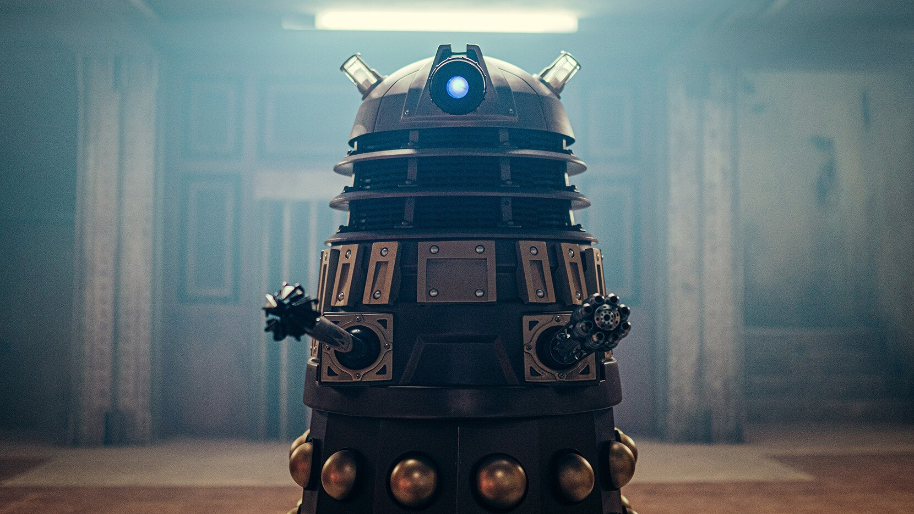
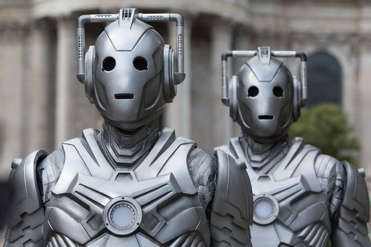
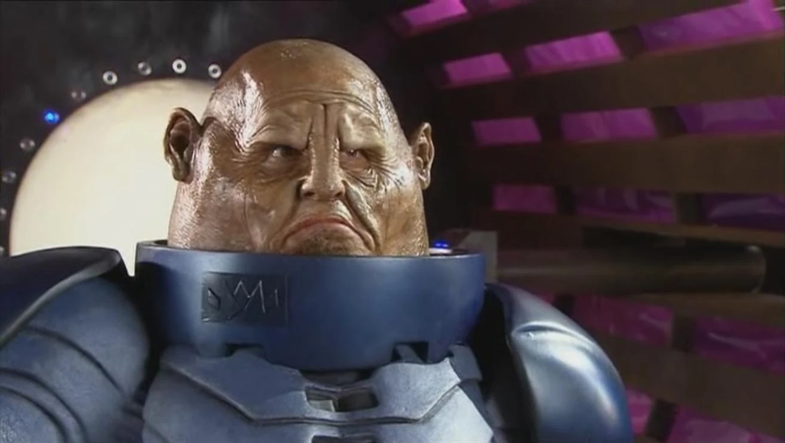
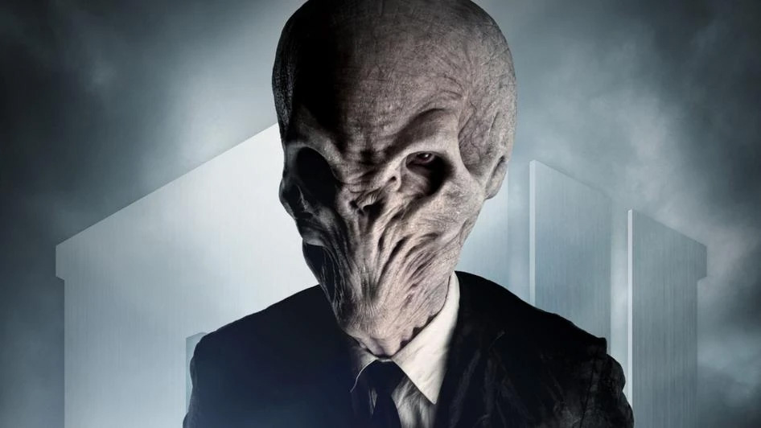
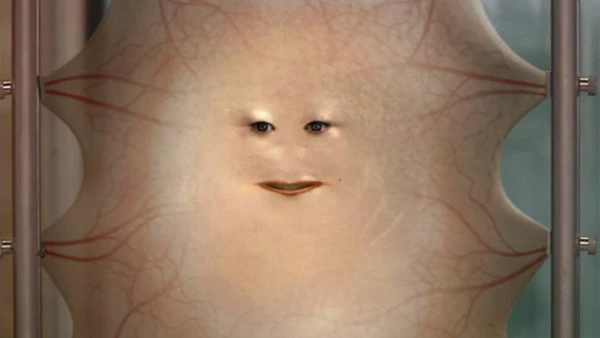
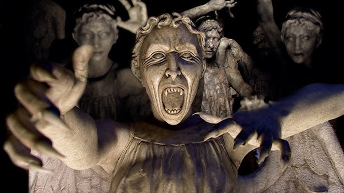

Nepriateľia
Doktor má veľa nepriateľov, s ktorými neustále bojuje. Mnohé z nich predstavujú nebezpečenstvo pre ľudí, ale Doktor miluje ľudí a snaží sa ich chrániť. Niektoré z nepriateľov sa menia z epizódy na epizódu, niektoré však zostávajú počas sezón. O týchto chcem povedať viac.
Dalek
Being inspired by the German Nazis, the race of Daleks is portrayed as violent, merciless and pitiless cyborg aliens, completely absent of any emotion other than hate, who demand total conformity to the will of the Dalek with the highest authority, and are bent on the conquest of the universe and the extermination of any other forms of life, including other 'impure' Daleks which are deemed inferior for being different to them. Collectively, they are the greatest enemies of Doctor Who's protagonist, the Time Lord known as "the Doctor".
Príklad
Citát
Exterminate! Exterminate!Cyberman
The Cybermen are a species of space-faring cyborgs who often forcefully and painfully convert human beings (or other similar species) into more Cybermen in order to populate their ranks while also removing their emotions and personalities.
Príklad
Citát
We are the future. You will be like us.Sontaran
The Sontarans have an extremely militaristic culture which prizes discipline and honour as its highest virtues; every aspect of their draconian society is geared toward warfare, and every experience is viewed in terms of its martial relevance.
Príklad
Citát
Legend says that he led the battle in the last great Time War. The finest war in history and we weren't allowed to be a part of it.!The Silence
The Silence are a religious order, represented by humanoids with alien-like physical characteristics. The Silence are perceived only while being viewed; they are instantly forgotten once a viewer looks away. To keep track of their encounters with the Silence, Doctor Who's characters mark tallies on their bodies or use audio-recorder devices embedded in their hands to let them know if they have seen the Silence. Silence are portrayed as being able to gather electrical energy around them and shoot it from their hands.
Príklad
Cassandra
Lady Cassandra O'Brien.Δ17 (""dot Delta Seventeen"") viewed herself as the last pure human left in the universe at a time (the year five billion) when the Earth was finally destroyed by the expansion of the Sun. This was a viewpoint challenged by Rose Tyler when she met a woman who had been altered by almost endless cosmetic surgery into what was now a brain in a jar and a face set into skin stretched around a mobile frame.
Príklad
Citát
Moisturise me!Weeping Angels
In their usual form, Weeping Angels resemble silent human-sized stone statues in the form of winged angels in draped clothing, such as might appear as tomb statuary in a Victorian graveyard. As they close in on more aware victims they transform to a more horrific, bestial, and demonic aspect with wide-open mouths, vampiric teeth, and clawed hands. Any statue might be a disguised Weeping Angel.
When they are not being observed by another being, Weeping Angels can move very quickly and silently. Their phenomenal speed allows them to close distances of metres literally in the blink of an eye. However, when they are being observed they become "quantum-locked", occupying a single position in space and becoming stone. In this state, they are frozen and difficult to destroy.
